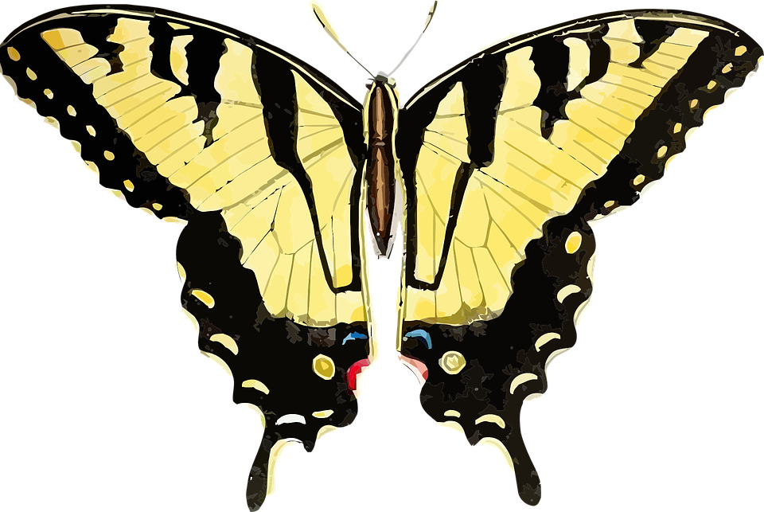

bilden på månen inuti denna textruta (id img-transition)
footern
Bilderna på fjärilarna (class butterfly-wrapper och butterfly-flapping)

Animationer och JavaScript
Knappen för att visa/dölja en div och ändra text
En vanlig effekt är att något händer när man klickar på en knapp, vilket görs genom att koppla en
händelsehanterare till knappen. Knappen på denna sida är länkad till ett script som visar och döljer en div,
och byter även knappens text.
Själva knappen skapas i HTML. Men divens animation och utseende styrs av CSS.
Sfären som roterar i bakgrunden
Den roterande sfären i bakgrunden är ganska avancerad. Men det är inte främst JavaScriptet som gör det, utan ett
intrikat samspel med CSS.
Skriptet hämtar diven där själva sfären ska ritas upp och initierar en tom array
En sfär är 180 grader, så for-loopen räknar upp till max 179. I exemplet räknas varje loopvarv upp med 8,
vilket ger 180 / 8 = 22.5 divar (22 st).
rows.push lägger för varje loop-varv till en skapad diven i arrayen, och rotateY roterar den runt y-axeln med
[i] grader. Ingen rörelse alltså, enbart roterad linje.
row.join("") tar alla nu 22 skapade divar och lägger dem i rad, utan mellanslag
Men inget rör sig än. Det är i CSS själva rörelserna skapas.
sphere-container fixerar elementet på sidan (täckande) och lägger till en
gradient
bakgrund. Den placerar även sfären bakom alla andra element.
sphere-scene bestämmer storleken sfären tillåts ta på sidan, och tillåter
child-element att vara just 3D (annars kollapsar de till 2D).
sphere-wrapper är även den till för tillåta 3D, men nu är det sphere-rotate (CSS-namnet på animationen) som ska transponeras utan att förlora
effekten från spere-scene.
sphere-rotate visar den faktiska sfär-kroppen, och gör så att den roterar
kring sin egna axel.
rotate-Sphere är den huvudsakliga CSS-animationen. Den roterar i både x- och
y-led, och dess start på 0 (inplicit) och stopp på 360 ger en sömlös loop.